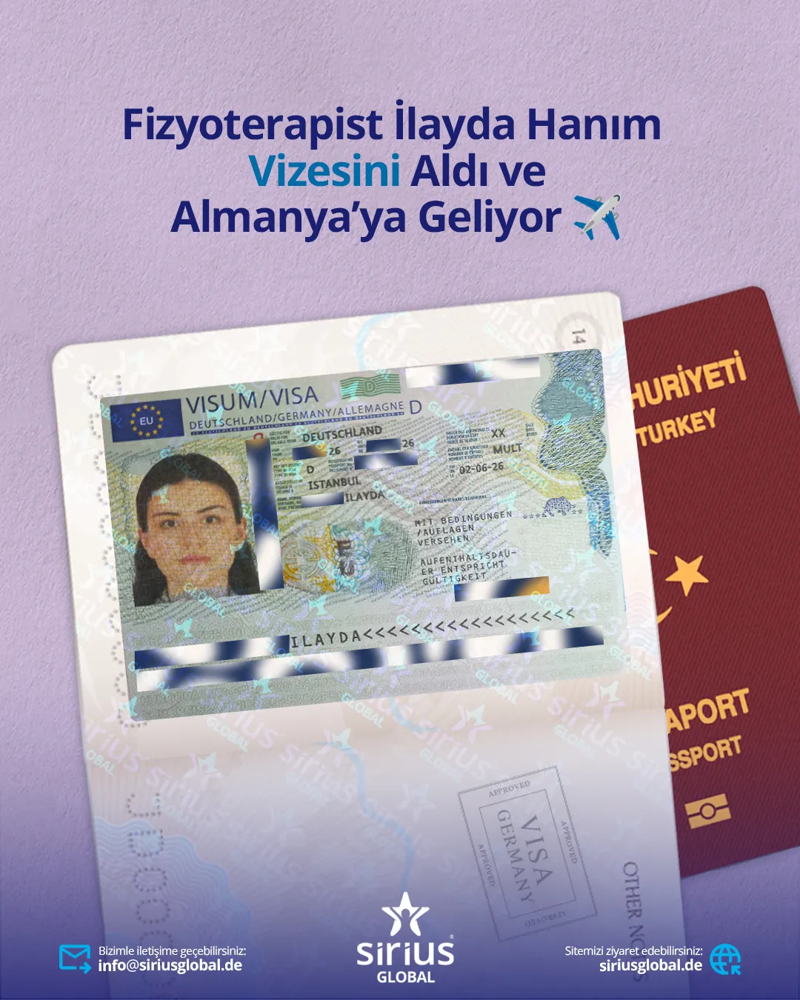

SİRİUS TALENT & PARTNER (FÜR ARBEITGEBER)
Personel İhtiyacınıza Sürdürülebilir Çözüm
Almanya'daki klinik, hastane ve sağlık kurumlarının uzman personel eksikliğini etik işe alım, kaliteli dil eğitimi ve tam kapsayıcı relokasyon yönetimi ile çözüyoruz.

Neden Sirius Talent Partnerliği?
Alman sağlık sektöründe yüksek kalıcılık ve sıfır risk prensibiyle çalışıyoruz.
Etik İşe Alım Güvencesi
Gütesiegel "Faire Anwerbung Pflege Deutschland" ilkelerine tam uyumlu, adaylardan haksız ücret talep etmeyen sürdürülebilir süreç.
%95 Kalıcı Uyum Oranı
Dil eğitimi ve mesleki hazırlığın yanı sıra interkültürel atölyelerimiz sayesinde adaylarımız kurumunuzda uzun yıllar verimle çalışır.
Anahtar Teslim Süreç
Vize, denklik (Anerkennung), Almanya'da konaklama ve çalışma izni adımlarının tamamını ekibimiz üstlenir.